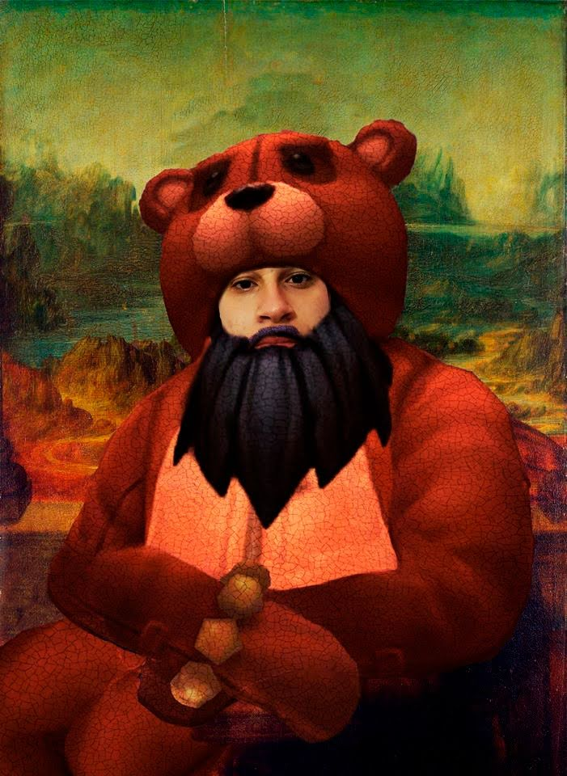

Olá! Me chamo Gabriel Costa, sou morador de Cotia com uma criatividade abaixo da média quando o assunto é personalizar meu próprio site, por isso, através desta página, tento expressar um pouco do quão gratificante é deixar alguma coisa com o seu "Rosto" se por assim dizer. Dentro dessa situação, continuo me desafiando a melhorar minhas habilidades técnicas e sociais.
Dentro dos meus passatempos, além de explorar bastante minhas possibilidades dentro de um código, existem jogos eletrônicos, um bom exemplo é o famoso Super Mario, conhecido por sua longa história dentro da técnologia e seu icônico protagonista.